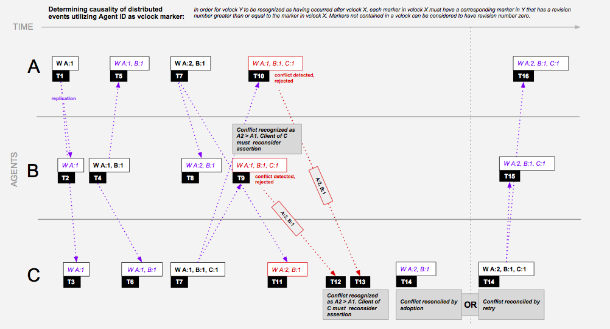

Goals
Shadowman is a distributed fact repository which intends to provide:
- Efficient query federation which issues queries against the distributed data corpus, intelligently excluding agents which are known to not maintain satisfying data
- Strong distributed fact integrity guarantees without complex mass synchronization, record locking, or expensive timing systems (atomic clocks & GPS receivers)
- A concise API and flexible data model (Pento) supporting asynchronous distributed fact operations providing confidence-level feedback, and allowing for desired distribution to be specified per-operation
- Good citizenship and low barrier to entry for contributing to the distributed fact repository. An agent exists as simple web process which is easily deployed into an existing enterprise without introducing specific hardware, software, or networking requirements
- framework for simulation and monitoring of distributed operations
Goal 1
Ability to easily define, deploy and monitor distributed systems, and have those systems collectively contribute to a global knowledge base
- Centralized XML-based configuration
- Java API for query and assertion of facts across the entire data corpus
- Abstraction layer for enabling multiple data storage implementations (SQL, sorted key-value, document)
- Java API enabling dynamic assembly of distributed operations
- Java API simplifying asynchronous distributed query and persistence
- PKI-based security
- JMX monitoring
Goal 2
Optimized federated query capability which is aware of data locality per fact and provides optimized query paths thereby reducing network traffic, minimizing false positives and eliminating false negatives
- Distributed probabilistic hash (Bloom filter) of fact location evaluated at query time results in query only being federated to agents having highest probability of returning results
- Supporting Java API allowing for incorporation of additional algorithms
Goal 3
Transactional fact integrity enforcement ensuring that the freshest fact is considered before a proposed mutation is accepted by remote agent
- Ensures that facts are not mutated out of turn
- Does not require distributed agents maintain synchronized precise internal clocks
- Accounts for unbounded latency – distributed transactions not required
